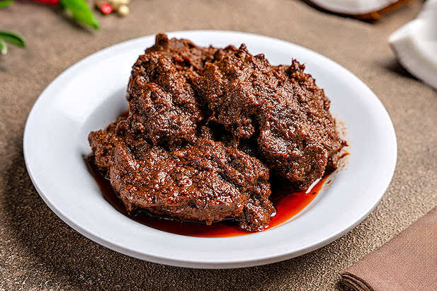

Sumatera Barat
Rendang
Olahan daging sapi kaya rempah yang dimasak perlahan dalam santan hingga mengering dan berwarna cokelat gelap.
Bahan Utama:
- 1 kg daging sapi (potong sesuai selera)
- 1,5 liter santan kental dari 3 butir kelapa
- 2 batang serai (memarkan), 4 lembar daun jeruk
- 2 lembar daun kunyit (ikat simpul), 1 asam kandis
Bumbu Halus:
- 15 butir bawang merah, 8 siung bawang putih
- 100 gr cabai merah keriting, 3 cm jahe, 4 cm lengkuas
- 1 sdt ketumbar sangrai, 1/2 sdt jintan, garam secukupnya
Cara Membuat:
- Masak santan bersama bumbu halus dan daun-daunan sambil terus diaduk agar santan tidak pecah hingga mendidih dan berminyak.
- Masukkan potongan daging sapi, kecilkan api.
- Masak perlahan sambil sesekali diaduk hingga kuah menyusut menjadi kalio, lalu lanjutkan mengaduk hingga dedak rendang mengering dan menghitam (sekitar 3-4 jam).